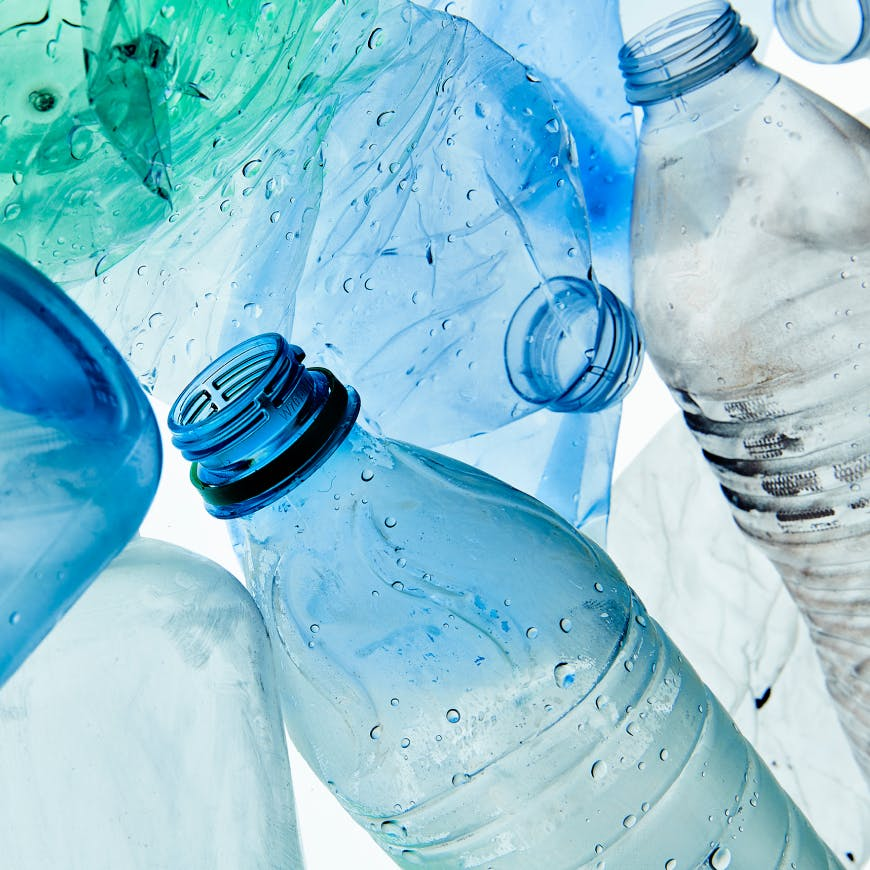
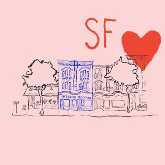

Our bags are carefully crafted with a proprietary blend of marine plastic and rothy's signature thread, which is spun from single-use water bottles (45+ million and counting!).
Bags by Rothy's are knit with 100% recycled materials. We blend our signature thread-spun from water bottles-with marine plastic collected within 30 miles of coastlines and marine environments.
Being sustainable means more than just using recycled materials. It also means fostering an inclusive, positive work environment for our team members around the globe. We’re proud to offer exceptional health and wellness perks to all the Rothy's family in our San Francisco HQ, our China workshop and beyond.
